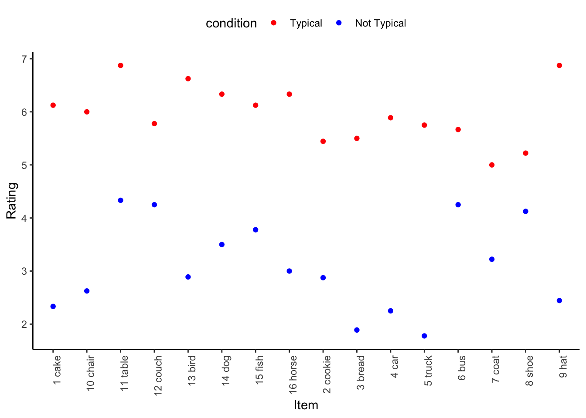

library(tidyverse)Norming Analysis for Turkish Materials
# function for reading PCIBEX
read.pcibex <- function(filepath, auto.colnames = TRUE, fun.col = function(col, cols) {
cols[cols == col] <- paste(col, "Ibex", sep = ".")
return(cols)
}) {
n.cols <- max(count.fields(filepath, sep = ",", quote = NULL), na.rm = TRUE)
if (auto.colnames) {
cols <- c()
con <- file(filepath, "r")
while (TRUE) {
line <- readLines(con, n = 1, warn = FALSE)
if (length(line) == 0) {
break
}
m <- regmatches(line, regexec("^# (\\d+)\\. (.+)\\.$", line))[[1]]
if (length(m) == 3) {
index <- as.numeric(m[2])
value <- m[3]
if (index < length(cols)) {
cols <- c()
}
if (is.function(fun.col)) {
cols <- fun.col(value, cols)
}
cols[index] <- value
if (index == n.cols) {
break
}
}
}
close(con)
return(read.csv(filepath, comment.char = "#", header = FALSE, col.names = cols))
} else {
return(read.csv(filepath, comment.char = "#", header = FALSE, col.names = seq(1:n.cols)))
}
}# read the data
Data <- read.pcibex("../results_NOV23.csv")
# janitor clean names
Data <- janitor::clean_names(Data)
Data$subject <- with(Data, paste(results_reception_time, md5_hash_of_participant_s_ip_address)) %>%
as.factor() %>%
as.integer() %>%
sprintf("S[%s]", .) %>%
as.factor()
Data <- Data %>% dplyr::select(-results_reception_time, -md5_hash_of_participant_s_ip_address)
TypData <- Data %>%
filter(penn_element_type == "Scale")
TypData$value <- as.numeric(as.character(TypData$value))
length(unique(TypData$subject))[1] 20# Show how many NAs in condition column
sum(is.na(TypData$condition))[1] 20# Delete rows with NA
TypData <- TypData %>% filter(!is.na(condition))
TypData %>%
group_by(condition) %>%
summarize(Rating = mean(value), Min = min(value), Max = max(value), n = length(value))# A tibble: 2 × 5
condition Rating Min Max n
<int> <dbl> <dbl> <dbl> <int>
1 1 5.64 1 7 160
2 2 3.54 1 7 160bysubject <- TypData %>%
group_by(subject, condition) %>%
summarize(value = mean(value))
bysubject$condition <- as.factor(bysubject$condition)
ggplot(bysubject, aes(subject, value, color = condition)) +
geom_point() +
theme_classic() +
theme(axis.text.x = element_text(angle = 90, vjust = 1, hjust = 1)) +
scale_color_manual(labels = c("1" = "Typical", "2" = "Not Typical"), values = c("1" = "red", "2" = "blue")) +
theme(legend.position = "top") +
xlab("Item") +
# add y breaks and ticks
scale_y_continuous(breaks = seq(0, 7, 1))# S[7] misunderstood the task
# S[15] and S[20] is just bad# delete S[15] and S[20]
TypData <- TypData %>% filter(subject != "S[15]", subject != "S[20]", subject != "S[6]")
# for S[7], given an noun_en and condition, switch the values
TypData <- TypData %>%
mutate(value = case_when(subject == "S[7]" ~ case_when(condition == 1 ~ 7 - value, condition == 2 ~ 7 - value),
TRUE ~ value))
TypDataItem <- TypData %>%
group_by(item, noun_en, condition) %>%
summarize(Rating = mean(value), n = length(value))TypDataItem$condition <- as.factor(TypDataItem$condition)
ggplot(TypDataItem, aes(paste(item, noun_en), Rating, color = condition)) +
geom_point() +
theme_classic() +
theme(axis.text.x = element_text(angle = 90, vjust = 1, hjust = 1)) +
scale_color_manual(labels = c("1" = "Typical", "2" = "Not Typical"), values = c("1" = "red", "2" = "blue")) +
theme(legend.position = "top") +
xlab("Item") +
# add y breaks and ticks
scale_y_continuous(breaks = seq(0, 7, 1))
TypDataItem %>%
select(c("item", "condition", "Rating")) %>%
pivot_wider(names_from=condition, values_from = Rating) %>%
mutate(Diff = `1`-`2`)%>%
group_by()%>%
summarize(mean(`1`), mean(`2`),min(`1`), min(`2`), max(`1`), max(`2`), mean(Diff), min(Diff), max(Diff), min(Diff))# A tibble: 1 × 9
`mean(\`1\`)` `mean(\`2\`)` `min(\`1\`)` `min(\`2\`)` `max(\`1\`)`
<dbl> <dbl> <dbl> <dbl> <dbl>
1 5.97 3.10 5 1.78 6.88
# ℹ 4 more variables: `max(\`2\`)` <dbl>, `mean(Diff)` <dbl>,
# `min(Diff)` <dbl>, `max(Diff)` <dbl>TypDataItem %>%
select(c("item", "condition", "Rating")) %>%
pivot_wider(names_from = condition, values_from = Rating) %>%
mutate(Diff = `1` - `2`)# A tibble: 16 × 5
# Groups: item, noun_en [16]
noun_en item `1` `2` Diff
<chr> <chr> <dbl> <dbl> <dbl>
1 cake 1 6.12 2.33 3.79
2 chair 10 6 2.62 3.38
3 table 11 6.88 4.33 2.54
4 couch 12 5.78 4.25 1.53
5 bird 13 6.62 2.89 3.74
6 dog 14 6.33 3.5 2.83
7 fish 15 6.12 3.78 2.35
8 horse 16 6.33 3 3.33
9 cookie 2 5.44 2.88 2.57
10 bread 3 5.5 1.89 3.61
11 car 4 5.89 2.25 3.64
12 truck 5 5.75 1.78 3.97
13 bus 6 5.67 4.25 1.42
14 coat 7 5 3.22 1.78
15 shoe 8 5.22 4.12 1.10
16 hat 9 6.88 2.44 4.43